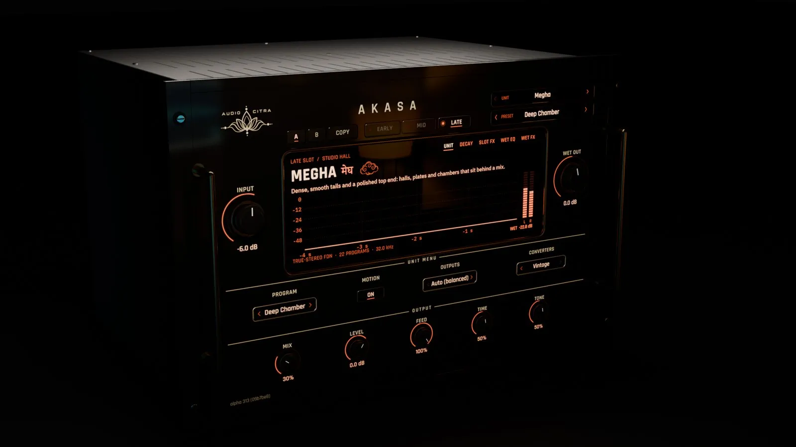

The rooms you remember.
I analyzed how classic digital reverbs decay and colour the sound, and fitted these to that. Six units, three slots you can chain, wet EQ, presets and A/B. If you grew up on those old racks.. you'll hear it.

Noir skin · close-up · 3D render
Your audio, through the presets.
Pick a sample, or your own file, and hear it through twelve of the factory presets. This runs Ākāśa's own engine in your browser, the same code the plug-in uses. Your file stays on your device: nothing is uploaded.
The first 15 seconds of one file, up to 25 MB. WAV, MP3, FLAC, OGG or M4A.
Limits: twelve presets and Mix only, the first 15 s of one file, levels set to a safe peak, no export or download. Changing preset restarts the tail, as it does in the plug-in. For every control, get the plug-in.
Fitted to what I analyzed.
Megha
The lush, dark one from the golden age of studio reverb. It sits behind a vocal or a piano without fighting it, and long halls bloom instead of hiss. My go-to for ballads, strings and anything that needs to feel expensive. 22 programs, true stereo, and Motion gives the tail that slow drift.
22 programs · true stereo · MotionGuha
Brighter and more forward, that 80s rack sound. Great on snares, toms and synth stabs where you want the verb to be part of the hit. The backward, echo and hold programs are pure fun for transitions and drops. 14 programs.
14 programsVayu
The reverb straight out of a classic virtual-analog synth, so of course it lives on synths: pads, leads, plucks. The colour filter and feedback let you push it from a soft wash into something that sings back at you.
Colour filter · feedbackDvaya
For when a plain reverb is too polite. 77 two-effect presets pair the reverb with delay, modulation, phaser or pitch, so one slot gets you a whole sound-design chain. Guitars, synths and anything that needs to move.
77 presetsValuka and Adi
Small, grainy, early-digital boxes, and I love them for it. Valuka has 100 programs (flanges and choruses too), Adi has 64. Put them on drums, demos and lo-fi stuff where a pristine reverb would sound wrong.
100 + 64 programsOptional converters
Set Converters to Vintage and you get the word length, word noise, idle floor and DC of old converters.. the grit nobody asked for but everybody misses. It's on Megha (on by default), Valuka and Adi (off by default).
Converters: Off · VintageThree slots
Early, Mid and Late each hold any unit, and each feeds the next. Every slot gets pre-delay, width, cuts, shimmer and freeze. After those: a four-band wet EQ, ducking, chorus and a fidelity control, plus presets and A/B.
Early · Mid · Late · A/BFIT: Classic or Analyzed
This one is pure nerd stuff. I went back and refitted the late reverb of the clean units against my analysis with gradient descent. The FIT switch in the lotus panel lets you flip between Classic (the original fit) and Analyzed (the new one), with a crossfade, so you can judge for yourself.
FIT: Classic · AnalyzedAuto Gain
On by default: the output sits at the same loudness as the input, so you're never fooled by a louder reverb.
Auto GainHear the presets in action.
Every clip is a factory preset or a unit's own program, named the way the menu shows it, so you can load the exact sound yourself. Only the mix is set. Dry and processed are matched in loudness, and where I have a plot of that exact program it sits right next to the clip.
Watch the walkthrough.
All six units on the same dry vocal and snaps, so you can hear what each one is. The controls work exactly like Shunya's.
Pick a finish.
These are straight from the plug-in, no mockups. Click around.. I spent way too long on some of these.
Want to try Ākāśa?
Early access (beta): it works and I support it, but I'm still finishing it. Every update is free, including 1.0 and all the 1.x updates after it.
VST3 · Windows 64-bit · licence, trial and signed updates right inside the plug-in · How to install · What's changed